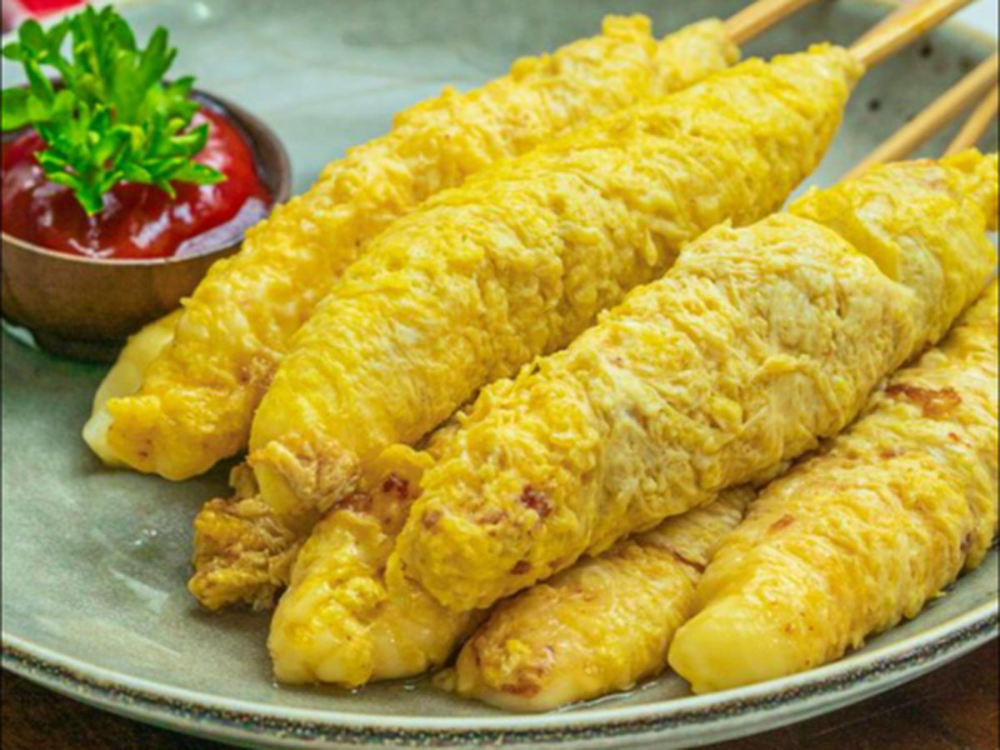

Telur Gulung, which literally translates to "Rolled Egg," is a classic Indonesian street food snack (jajanan) that holds a special, nostalgic place in the hearts of many. The concept is brilliantly simple: a very thin, watery egg batter is drizzled into hot oil, where it instantly forms a crispy, web-like sheet. Before it has a chance to fully cook, a bamboo skewer (tusuk sate) is used to quickly roll this delicate egg net around it.
In a small bowl, mix the chili suace, tomato kechup, water, and sugar. stir it well combined and set aside
More tips, click the youtube link
How to make telur gulung video